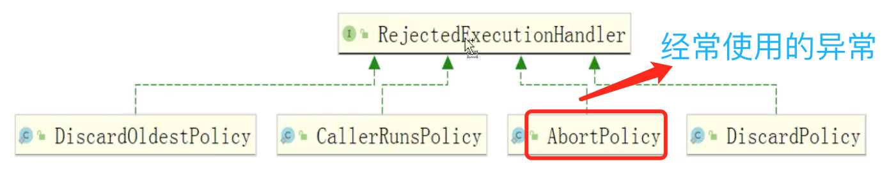
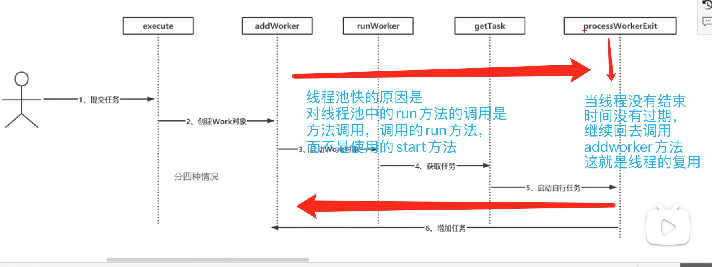

直接使用线程的run方法和start方法的区别 ，在断点方法中点击idea 的照相机的图标按钮，可以查看线程信息
start方法启动
线程池的操作效率大于普通线程操作速度，经过代码验证
常见的3种线程池创建方式 ExecutorService cachedThreadPool = Executors.newCachedThreadPool(); // 运行速度最快 ExecutorService fixedThreadPool = Executors.newFixedThreadPool(10); // 较慢 ExecutorService executorService = Executors.newSingleThreadExecutor();// 慢 三种创建方式的构造参数都是类似，但是效率却不同的原因如下
ExecutorService cachedThreadPool = Executors.newCachedThreadPool(); // 运行速度最快 其原理同下图 第二个参数Integer.MAX_VALUE 是一个非常大的数字 2147483647 即在这个数字内的线程数，都会快速的处理
线程的复用
ExecutorService fixedThreadPool = Executors.newFixedThreadPool(10); // 较慢,如图，线程的执行效率和任务处理数在某种意义上成正比，当前的设置是10个线程，处理100个任务， 当初始化线程和执行任务数成正比，且值不大的时候，执行效率很快
ExecutorService executorService = Executors.newSingleThreadExecutor();// 慢 // 最慢，相当于是单机版的newFixedThreadPool ，因为他不能自定义参数，只有一个线程
但是以上创建线程的3种方式阿里并不推荐， ExecutorService fixedThreadPool = Executors.newFixedThreadPool(10); // 较慢 ExecutorService executorService = Executors.newSingleThreadExecutor();// 慢 因为 LinkedBlockingQueue 队列，是可以无限存放， 暂时没有人执行的任务全部都会存放在队列里面，假如现在有1000W任务，但是初始线程数量只有10个， 那么剩余的900多W的线程都会放入LinkedBlockingQueue队列，那么服务器的内存就会受不了。 ExecutorService cachedThreadPool = Executors.newCachedThreadPool(); 创建方式也不被推荐的方式就是，如果现在有1000W个任务要执行，那么就会创建1000W个线程，那么cpu就会100%，严重还会崩溃 ，内存泄露 oom异常
自定义线程池的代码实现及分析
// 自定义线程池 ，初始核心员工容量为10，非核心员工10（共计maximumPoolSize=20），自定义队列ArrayBlockingQueue长度为10
// ThreadPoolExecutor threadPoolExecutor = new ThreadPoolExecutor(10, 20, 0L,
TimeUnit.SECONDS, new ArrayBlockingQueue
// 当前的队列存在的问题是，任务数量一旦超过了定义的30个任务就会向上抛出异常
线程池的提交优先级 ，1，核心员工，2队列 3，非核心员工。 线程池的执行优先级，1，核心员工，2，非核心员工，3，队列 ，队列中的任务是最后执行的
线程池的高效工作的秘密 1， 线程复用，2，线程中直接调用的run 方法，而不是start方法

try {
// task 线程不为空 ||
while (task != null || (task = getTask()) != null) {
w.lock();
// If pool is stopping, ensure thread is interrupted;
// if not, ensure thread is not interrupted. This
// requires a recheck in second case to deal with
// shutdownNow race while clearing interrupt
if ((runStateAtLeast(ctl.get(), STOP) ||
(Thread.interrupted() &&
runStateAtLeast(ctl.get(), STOP))) &&
!wt.isInterrupted())
wt.interrupt();
try {
beforeExecute(wt, task);
Throwable thrown = null;
try {
// 调用的是 run方法 ，是方法调用
task.run();
} catch (RuntimeException x) {
thrown = x; throw x;
} catch (Error x) {
thrown = x; throw x;
} catch (Throwable x) {
thrown = x; throw new Error(x);
} finally {
afterExecute(task, thrown);
}
} finally {
task = null;
w.completedTasks++;
w.unlock();
}
}
completedAbruptly = false;
} finally {
// 验证是否线程结束，时间结束，重掉addworker方法
processWorkerExit(w, completedAbruptly);
}
数据库的主从分离 MasterSlaveSeparationOfTheDatabase